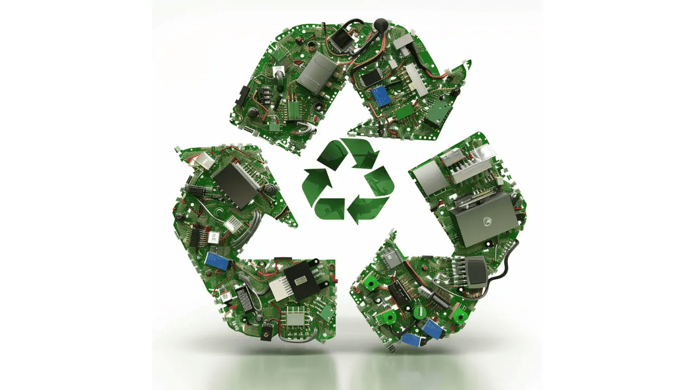

L'histoire de FREE SAS

Réduction de la consommation énergétique
Free met en place plusieurs initiatives pour optimiser la consommation énergétique de ses infrastructures, notamment ses centres de données et réseaux de télécommunications.
Écoconception des équipements
Les box internet de Free sont conçues pour durer plus longtemps, avec des matériaux recyclés pour minimiser l'empreinte carbone.

Recyclage des équipements
Free propose un programme de recyclage permettant aux abonnés de retourner leurs équipements en fin de vie, afin de réduire les déchets électroniques.